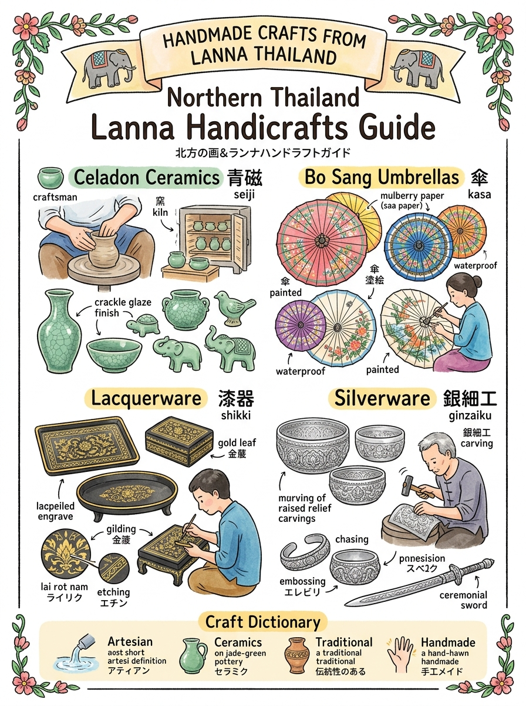
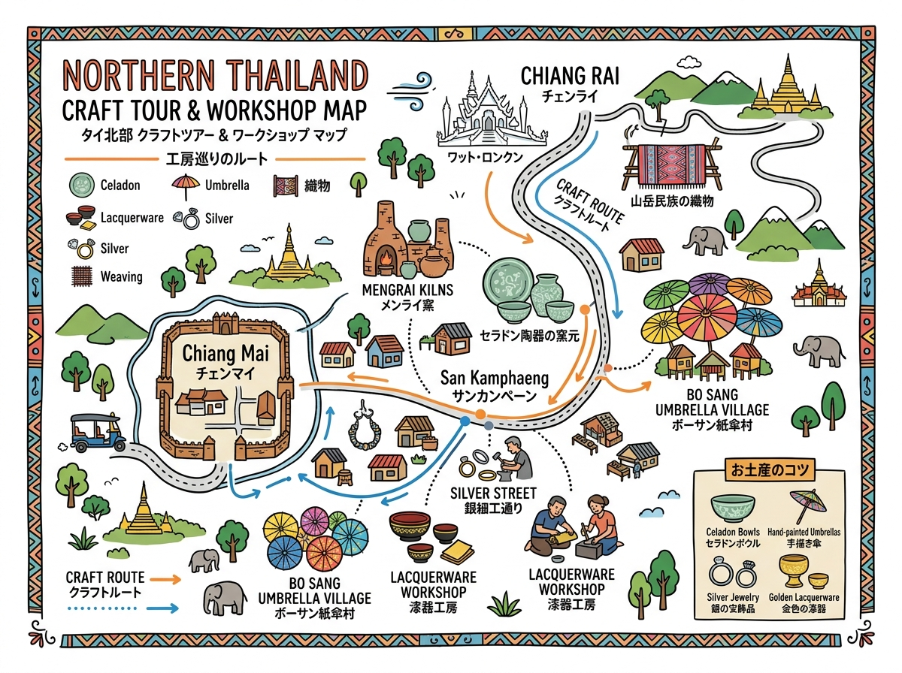

01
セラドン焼き（Ceradon Ware / เครื่องเคลือบศิลาดล）
鉄分を含む黒粘土と天然木灰（カシ・シクンシ科の灰）釉薬を用い約1,250〜1,300℃の高温還元焼成。透明感ある翡翠色（青磁色）と自然に生じる美しい微細な貫入（ひび模様）が特徴。
緑透明な釉薬が美しいセラドン焼きや、手工芸品の名産地・歴史・買い物のコツ。
クリックすると拡大して詳細を確認・印刷できます。

旅行者の持ち歩き・印刷に適した手書き風インフォグラフィック。

位置関係やルート、全体像を俯瞰できるワイドデザイン。
現地調査および公的データに基づく最新詳細情報。
鉄分を含む黒粘土と天然木灰（カシ・シクンシ科の灰）釉薬を用い約1,250〜1,300℃の高温還元焼成。透明感ある翡翠色（青磁色）と自然に生じる美しい微細な貫入（ひび模様）が特徴。
桑の樹皮から作る手漉きサー紙（サーペーパー）や綿布・絹を竹の骨組みに天然ゴム糊で張り、桐油で防水加工。職人がフリーハンドで花鳥風月やランナー風景・象を一気に描く伝統絵付け。
竹編みや木地を芯材に天然漆液（ヤーン・ラック）を何層も塗り重ね水研ぎ。黒漆に金箔を押し水で研ぎ出す「金箔蒔絵（ラーイ・ロット・ナム）」や鉄筆で線彫りし色漆を擦り込む彫漆（ラーイ・クード）。
純度92.5〜99%以上の銀を用い、松脂のクッション台に固定した銀板をタガネと金槌で裏表から叩き出して立体的な起伏を作る「サラック・ドゥン（鍛金・打ち出し彫金技法）」。仏教神話や十二支の精緻な彫刻。
チーク無垢材やモンキーポッド材を用い、熟練職人がノミと彫刻刀で透かし彫り・高浮彫り。本金箔貼り（ピット・トーン）や色ガラスモザイク象嵌を施した仏像・家具・レリーフパネル。
天然綿・生糸を用い高機で手織り。鳥の羽軸や指で色緯糸を拾い幾何学文様を織り込む「チョック技法」や経糸を浮かせる「ヨック技法」、天然草木染め（藍・ラック色素）による優美な伝統文様。
厳選された竹ひごや天然藤を用い、平織・綾織・六つ目編み等の精密な組み技法で成形。伝統的な「燻煙（スモーキング）」処理により防虫・防カビ効果と深みのある飴色の艶を両立したカントーク膳や飯籠。